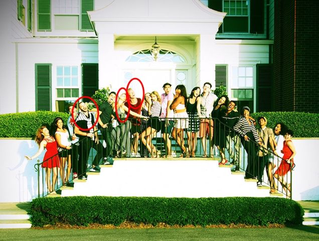
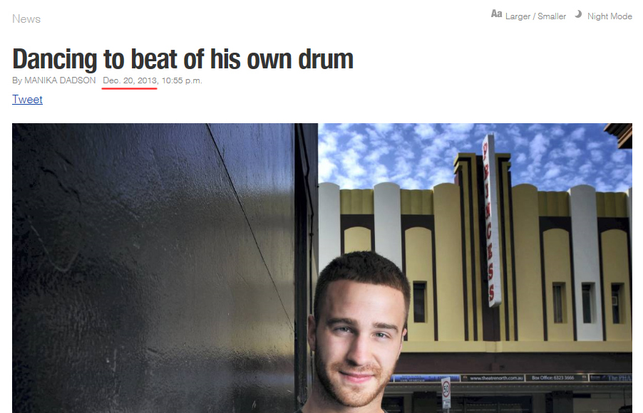
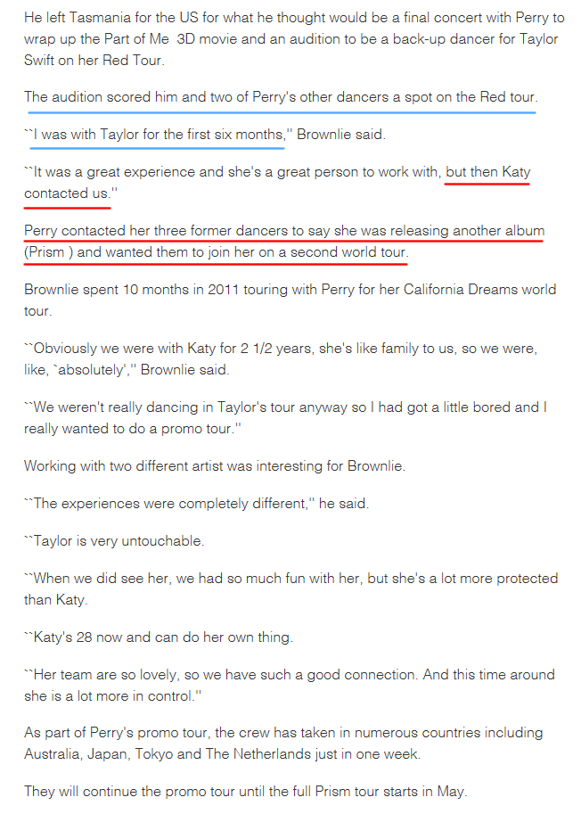
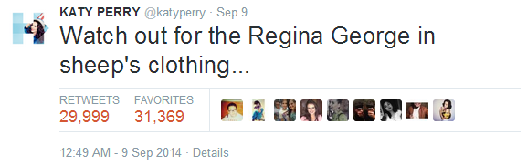
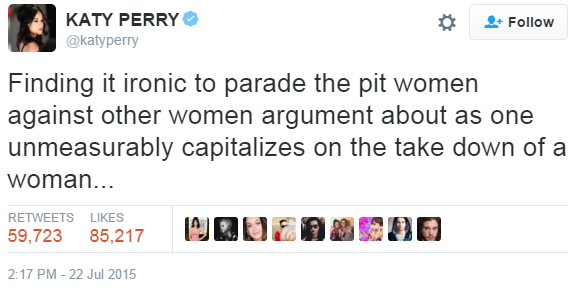
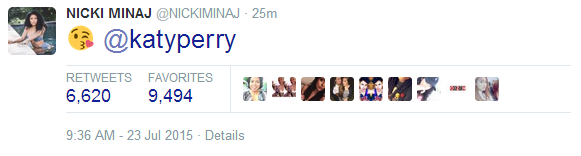

4. Bad Blood
2013年3月13号，RED巡演开始。
7月2-4号， Ashley、Claire、Tavi、RED团队的全部伴舞伴唱以及他们的朋友们在TS罗德岛豪宅过国庆节，图1，图2。
{kind=link}
{kind=link}
7月17号，TS和3个伴舞（Lockhart Brownlie、Scott Myrick、 Leah Adler）在推特上相互取关，这3人曾为Katy Perry工作，随后TS官网论坛上有人开始讨论，这3个伴舞据说是离开TS团队跳槽去了Katy Perry那边。
12月20号， Lockhart Brownlie接受澳大利亚家乡媒体Examiner采访时承认，他们只在TS团队工作了半年，后来Katy Perry喊他们过去，他们就跳槽了。
 事情发生时RED巡演才刚开始4个月，这几个伴舞2周前还在TS家一起过国庆节，被Katy一召唤说走就走。巡演行程那么紧，中途一次走3个伴舞，重新招人重新排练，这得有多糟心，还是被朋友挖的墙脚。
这3个人7月份就告诉TS他们要跳槽，然后相互取关（明显不是好聚好散），8月VMA这3个人就出现在Katy Perry的伴舞队伍中。
无论是7月、9月还是12月，这时候没人知道TS写了Bad Blood，哦不，还是有人知道的——Ed Sheeran，他参加了RED巡演北美区全部66场以及欧洲区2场，他目睹了3个伴舞跳槽的全过程。
TS在2014年10月上节目宣传1989时说她和ED在RED巡演期间各自制作自己的新专，TS在创作1989，ED在创作X，歌写好了会给对方听，ED还坚持有些歌TS必须要收录进新专不然他会生气。看上一节1989的完成时间，2013年3月-9月期间TS写的歌有I Wish You Would、Bad Blood、Wonderland，IWYW是和Jack合作她肯定会收录的，剩下Bad Blood和Wonderland，至少有一首是被Ed坚持必须收录进1989的。TS在14年10月31号在电台接受Ryan Seacrest采访时说1989中Ed最喜欢Bad Blood。2015年7月底Minaj为VMA提名挑事的时候Ed也站出来力挺TS的Bad Blood。
{kind=link}
以上种种让我相信，Ed Sheeran知道TS写Bad Blood的原因，他也支持TS将Bad Blood收录进1989中。
2014年9月TS登上滚石杂志封面，在杂志的第47页，谈及Bad Blood是写给另一位女艺人。
{kind=link}
{kind=link}

1989中最愤怒的一首歌叫做< Bad Blood >，是关于一个TS不愿透露姓名的女艺人。
去年，这位女明星越界了。
“她做了可怕的事，我们现在是敌人，这和男人无关，纯粹是工作上的事。她是在破坏我整个巡演，她将我团队中的工作人员挖角到她那边去。”
在杂志第72页，TS解释了她为什么要告诉所有人Bad Blood是写给一个女艺人：
{kind=link}

“我只希望大家知道这首歌不是写前男友的，我不想别人认为我对前男友是如何怨恨和攻击，因为事实并不是这样。”
滚石出刊后，9月9号，Katy Perry发了一条推
当心披着羊皮的Regina George
（Regina George是电影< Mean Girls >（贱女孩）中的大反派，现在很多小报把TS的Squad形容为Mean Girls中的小团体，把TS比喻为Regina George，不知道是不是拜Katy Perry所赐）
2015年7月，Minaj因为没有获得VMA提名而迁怒TS的Bad Blood，TS对Minaj的回应被卷入种族之争，很多不明真相的人跟风黑她，Katy Perry落井下石的又发一条推
在TS息事宁人的向Minaj道歉后，Minaj向（既没有为黑人女歌手说话，又没有为Minaj未获得提名鸣不平，只是在不点名的针对TS的）Katy Perry表示祝贺
是非曲直世人心中自有一杆秤
（伴舞事件始末及Bad Blood后续发展，参考这篇文章）
Katy Perry挖角导致3个伴舞在RED巡演进行一半时跳槽的事在Bad Blood发行前就已经被记载得清清楚楚，从几个当事人的反应来看，Bad Blood写Katy Perry无误。
Bad Blood手写歌词